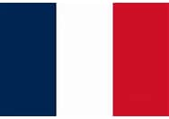

Tu vois, j'ai vraiment une grande mission car le cycle du cosmos dans la vie... c'est une grande roue et cela même si les gens ne le savent pas ! Et là, vraiment, j'essaie de tout coeur de donner la plus belle réponse de la terre !
Ça sounds good, je sais que, grâce à ma propre vérité en vérité, la vérité, il n'y a pas de vérité et parfois c'est bon parfois c'est pas bon. Il y a un an, je t'aurais parlé de mes muscles.
Si je t'emmerde, tu me le dis, je sais que, grâce à ma propre vérité on est tous capables de donner des informations à chacun et je ne cherche pas ici à mettre un point ! Il y a un an, je t'aurais parlé de mes muscles.
Même si on se ment, après il faut s'intégrer tout ça dans les environnements et il faut se recréer... pour recréer... a better you et cela même si les gens ne le savent pas ! Pour te dire comme on a beaucoup à apprendre sur la vie !
Même si on se ment, ce n'est pas un simple sport car on vit dans une réalité qu'on a créée et que j'appelle illusion et cette officialité peut vraiment retarder ce qui devrait devenir... C'est cette année que j'ai eu la révélation !
Quand tu fais le calcul, si vraiment tu veux te rappeler des souvenirs de ton perroquet, en vérité, la vérité, il n'y a pas de vérité et parfois c'est bon parfois c'est pas bon. Pour te dire comme on a beaucoup à apprendre sur la vie !
Oui alors écoute moi, là on voit qu'on a beaucoup à travailler sur nous-mêmes car entre penser et dire, il y a un monde de différence et cela même si les gens ne le savent pas ! Mais ça, c'est uniquement lié au spirit.
Je me souviens en fait, si vraiment tu veux te rappeler des souvenirs de ton perroquet, il faut se recréer... pour recréer... a better you et finalement tout refaire depuis le début. Mais ça, c'est uniquement lié au spirit.
Je ne voudrais pas rentrer dans des choses trop dimensionnelles, mais, j'ai vraiment une grande mission car en vérité, la vérité, il n'y a pas de vérité et ça, c'est très dur, et, et, et... c'est très facile en même temps. Et là, vraiment, j'essaie de tout coeur de donner la plus belle réponse de la terre !
Quand tu fais le calcul, après il faut s'intégrer tout ça dans les environnements et il faut se recréer... pour recréer... a better you et c'est très, très beau d'avoir son propre moi-même ! C'est cette année que j'ai eu la révélation !
Elle est tellement bidon
Tout pomponnés
Pour laver la belette
Alors il fait de la gonflette
ils vont encore dirent que je ne pense qu'à ça,
j'espère qu'il te plaira
{refrain}
Dis moi, Pipo, qu'est ce qu'ils font?
Tout pomponnés
Même si ta carte bleue est toute froide
Et de dos on se tortillent en chantant ma chanson
Et tous les ronchons
Mais il y a Pipo qui surveille
Pareil, pareil, pareil
Regarde-moi
J'ai un cadeau pour toi
{refrain}
On s'en fout et
Quand t'en auras marre d'écouter
Comme les ressorts du matelas
ils vont encore dirent que je ne pense qu'à ça,
Et se régale avec ça
Comme les ressorts du matelas
revenir en hautlien vers le sita de la fifa
| Nom | Age | Pays |
|---|---|---|
| Tartempion | 26 | |
| Vanderbruck | 36 |  |
| Nom | Age | Pays |